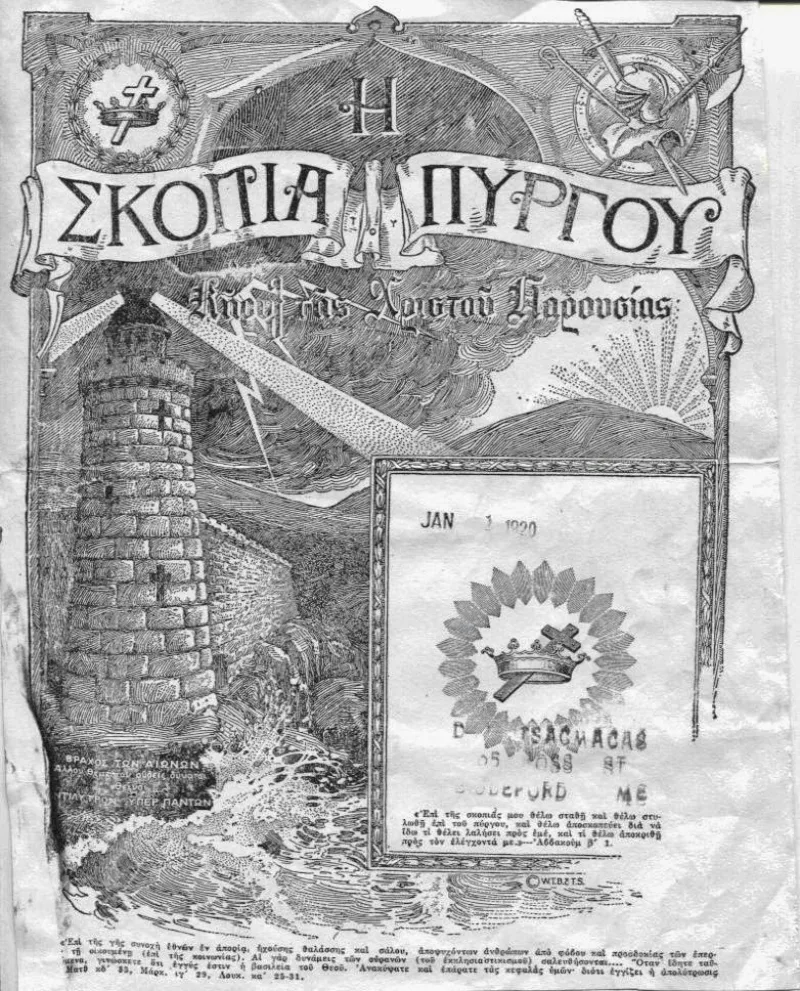
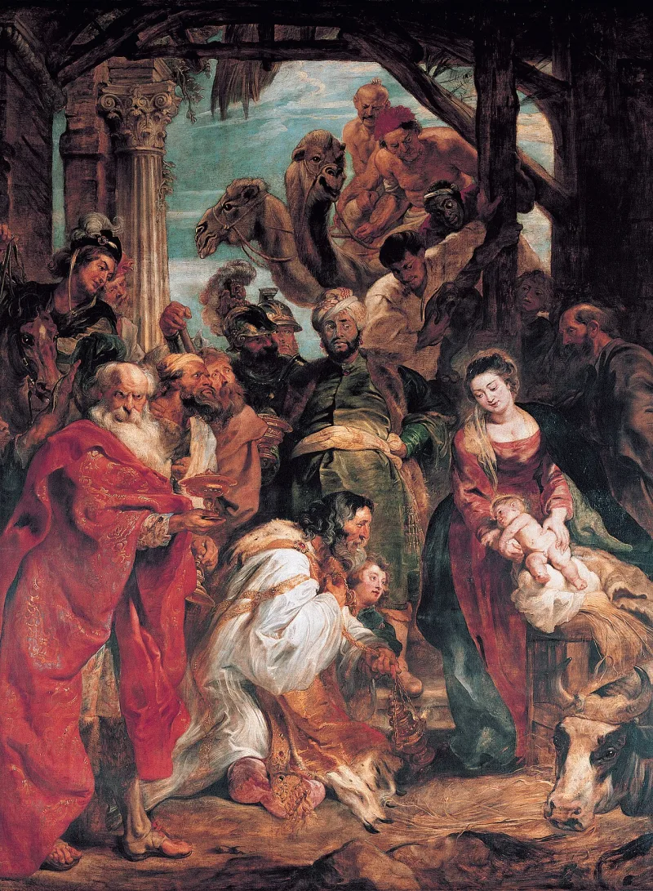

Worshipping Jesus was in their charter until 1999
AdmittedThe Watchtower's own publications admit these facts. You can make this point from their library alone.
What they taught for seventy years
The organization once taught that Jesus should be worshipped. Zion's Watch Tower of July 15, 1898 (p.
216) says so plainly: "we believe our Lord Jesus while on earth was really worshiped, and properly so." Their own charter, as amended in 1945 under Knorr, listed among its purposes "public Christian worship of Almighty God and Christ Jesus." That wording stayed until a 1999 amendment.
What they teach now
The Watchtower of January 1, 1954 said no distinct worship is to be rendered to Jesus Christ now glorified in heaven. By 1964 it was stronger.
It is unscriptural to render worship to the Son of God (The Watchtower, November 1, 1964, p. 671).
What was taught in their founding legal document is now called idolatry.
Their Bible moved with the doctrine
Hebrews 1:6 read "let all God's angels worship him" in the 1961 edition. The 1971 revision changed it to "do obeisance to him." Same Greek word, proskyneo.
New theology.
Their answer, at full strength
The light gets brighter (Proverbs 4:18), so early imprecision was corrected. And proskyneo genuinely has a range.
It covers bowing to a king as well as worship, so "obeisance" is lexically defensible. The charter wording, they say, used "worship" loosely.
Russell and Rutherford always denied that Jesus was Almighty God.
How strong is this argument?
They admit this themselves, in their own magazines and their own charter. The brighter-light defense concedes the flip.
And the lexical point breaks down in use: the same Greek word is rendered "worship" toward Jehovah and "obeisance" toward Jesus. In Hebrews 1:6 it is God commanding the act.
What to say
"Your charter said the purpose was public Christian worship of Almighty God and Christ Jesus. When did that stop being true?"



How they answer this — at its strongest
The light gets brighter, and proskyneo can mean bowing to a king.
Witnesses respond that the light gets brighter (Proverbs 4:18). Jehovah refines his people's grasp step by step. Loose early wording was later corrected.
Proskyneo has a real range. It runs from worship to respectful homage, and it is used of bowing to kings. So 'obeisance' toward Jesus is a defensible rendering. The charter wording, they say, used the word 'worship' in an older, loose sense. It was not Trinitarian. Russell and Rutherford always denied that Jesus was Almighty God.
The verdict
They admit it themselves. Their charter said 'worship of Almighty God and Christ Jesus.'
Every element comes from their own publications and their own corporate charter. Both positions are documented in Watchtower ink.
The brighter-light defense concedes the flip. The lexical point about proskyneo has some force in isolation. But the NWT renders the same word 'worship' when it is aimed at Jehovah, and 'obeisance' when it is aimed at Jesus. That is a translation choice driven by doctrine.
And in Hebrews 1:6 it is God who commands the act toward the Son.
Sources
- jwfacts — JW historical worship of Jesus until 1954
- Christian Research Institute — Is It Proper to Worship Jesus?
- christiandefense.org — Hebrews 1:6 worship or obeisance